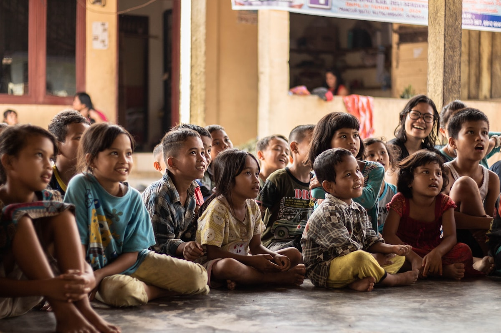
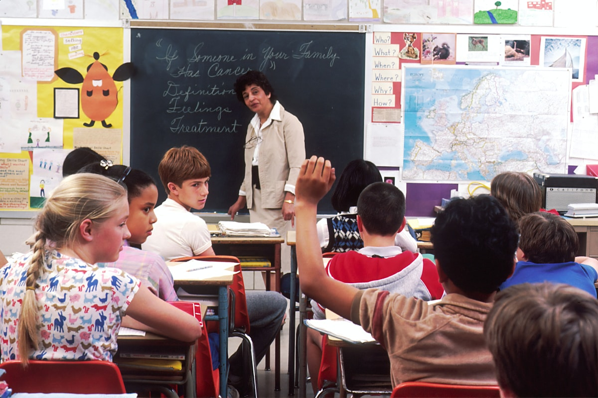
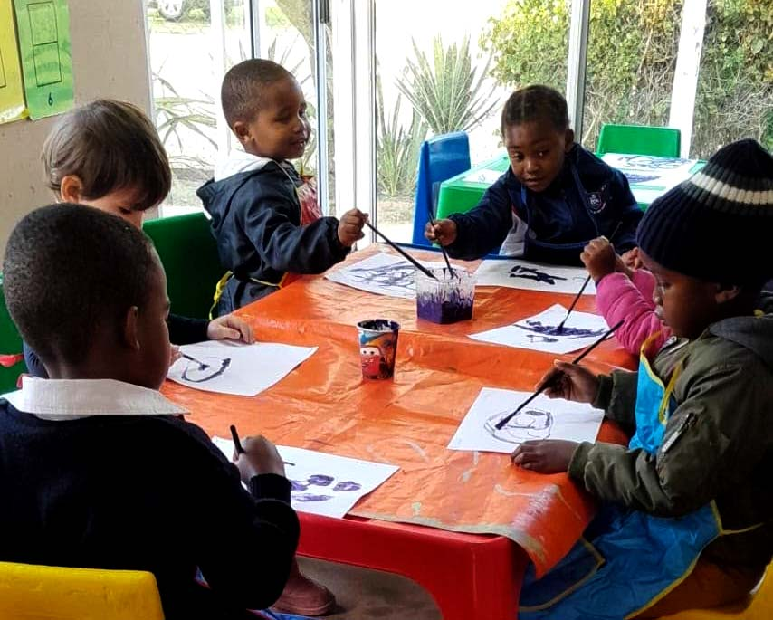
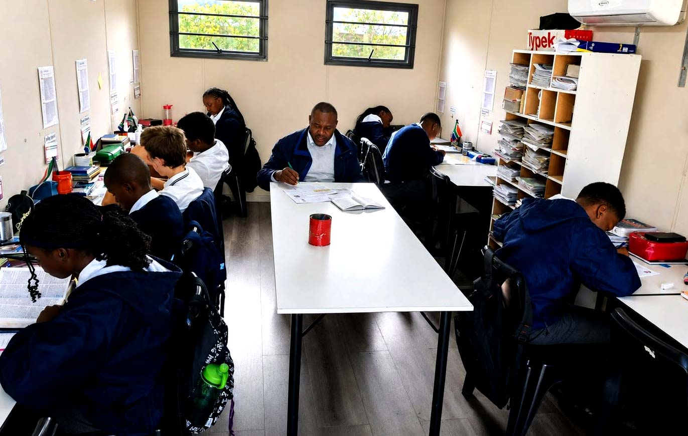

Mission
To provide a nurturing Christian school environment where learners are equipped to know God, serve others and impact the world through excellence in academic, spiritual and character formation.
OUR STORY
Hermanus Christian Academy is a Christ-centred learning community in Sandbaai, where every student is known, supported and encouraged to grow academically, spiritually and personally.
We partner with families to nurture character, cultivate responsibility, and help each learner discover their God-given potential.
OUR PURPOSE

To provide a nurturing Christian school environment where learners are equipped to know God, serve others and impact the world through excellence in academic, spiritual and character formation.

To be a leading Christ-centred school in Hermanus where every learner discovers their God-given potential, grows in faith and becomes a confident, capable servant leader.
OUR CURRICULUM
At our school, we use the internationally recognised Accelerated Christian Education (A.C.E.) curriculum. This unique, biblically-based system shifts the focus from traditional teacher-led lecturing to individualised, self-paced learning.
Instead of heavy textbooks, students work through bite-sized, self-instructional workbooks called PACEs (Packets of Accelerated Christian Education). This mastery-based system ensures that no student is left behind and no student is held back.


Hermanus Christian Academy · 1823 Bergsig Road, Sandbaai · +27 (0)28 316 1910